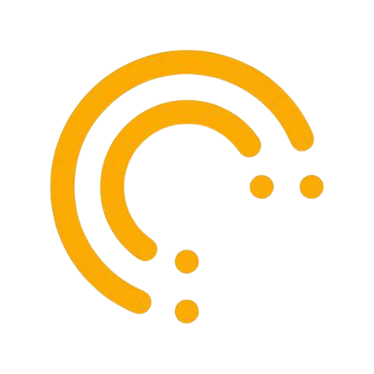

The Sun Exchange 
As an intern at The Sun Exchange, I was immersed in their amazing workspace in which I was involved in Operation & Maintenance manual procedures alongside real-world on-site project location assessment visits.
Throughout the course of the year, I worked on developing CDRS (Climate & Disaster Risk) tactics for current and future solar farm projects. Stemming from this experience, my passion for learning how to programme and be involved in software development was ignited. I truly believe any real-world problem can be immensely guided through proper implementations of software design, especially when paired with sustainable solutions such as renewable energy projects.
Responsibilities/ Internship Occupations
CDRS reasearch & development for current & future projects | Project Operations & Maintenance evaluation